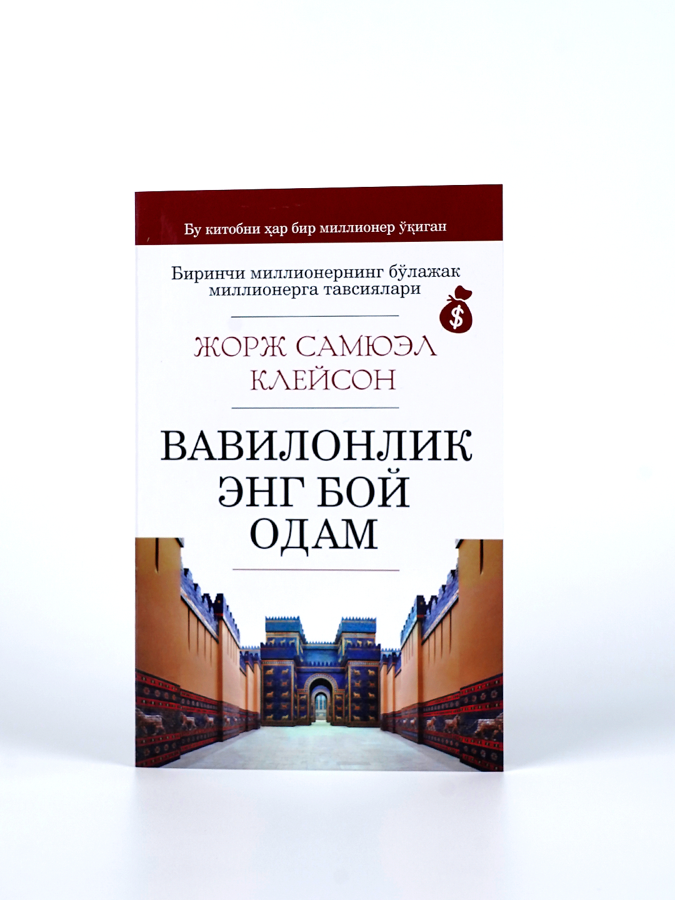

1984 - J.Oruell
Do'konda narxi: 59 900 so'm
Tizimga qo'shilgan sanasi: 2024-03-29
George Orwellning ushbu romani birinchi bora oʻzbek tiliga tarjima qilinib kitobxonlar eʼtiboriga etkazilmokda. “1984” romani “BBC talkinidagi eng yaxshi 200 ta kitob” ruyhatida sakkizinchi urinni, Newsweek tegishli insoniyat tarixidagi eng yaxshi kitoblar reytingida 2-o'rinni egallaghan. 2017 yilda ushbu kitob AQShda eng ko'p sotilgan kitob hhisoblanadi. Asarning bunchalar shuhrat kozonishiga sabalarni kitobni ukish mobainida bilib olishingiz mumkin.
PDF Ochish
Sotib Olish

Raqamli qal'a - D.Braun
Do'konda narxi: 64 900 so'm
Tizimga qo'shilgan sanasi: 2003-02-03
Asarda hisoblash havfsizlik, vatan havfsizligi yulida ishlaidigan jasur shahs hayoti, ular urgangan havf masalalari kutarilgan. Ush asarda ham vatanparvarlik, ham ehtirosli sevgi, ham qiziqarli ma'lumotlar, ham sizni o'z dunyosiga sayohat qiladigan azhoyib story topasiz. Asar voqealari AQSh, Spain, Japan kabi joylar o'tishi, voqeararning tez va kutilmagan rivozhi sizni o'ziga maftun qiladi.
PDF Ochish
Sotib Olish

Vavilonlik eng boy odam - J.S.Kleyson
Do'konda narxi: 25 000 so'm
Tizimga qo'shilgan sanasi: 2024-01-02
Қашшоқлик нима? Ночор яшашнинг айбдори ким? "Пулни топиш жуда қийин, уни билиб сарфлаш ҳаммасидан ҳам қийин” деган халқ ҳикматини қандай тушунасиз? Фаровонликка эришишнинг порлоқ йўли борми? АҚШлик ёзувчи Жорж Самуэл Клейсон қаламига мансуб "Вавилонлик бой” асарида ана шу саволларга жавоб изланади. 1926 йилда чоп этилган ушбу асар молиявий омадга эришиш усулларини ўргатувчи памфлетлар сериясидан ўрин олган китоб бўлиб, у банклар ва суғурта компаниялари орасида жуда тез тарқалиб, миллионлаб ўқувчиларнинг олқишига сазовор бўлган. Айтишларича, ушбу китобни барча миллионерлар ўқиб чиқишган экан.
PDF Ochish
Sotib Olish

Cho'qintirgan ota - M.Pyuzo
Do'konda narxi: 49 000 so'm
Tizimga qo'shilgan sanasi: 2003-11-08
Mario Pyuzoni mashhur qilgan va adabiyot sahnasida uning nomini ko‘klarga ko‘tarishga sabab bo‘lgan asar, shubhasiz, "Cho‘qintirgan ota yoxud mafiya sardori" asaridir. Bu asar million yillardan beri odamlar o‘rtasida davom etib kelayotgan illatlar, bir-birini ko‘rolmaslik, cheksiz boylikka bo‘lgan hirs, adovat kabilarni ro‘y-rost ifodalab bergani, shuningdek, amerikalik va sitsiliyalik mafiyachilarning kirdikorlarini to‘la-to‘kis ochib bergani bilan dunyo miqyosida ommalashib ketdi.Asar badiiy to‘qimalarga boy bo‘lsa-da, kitobxonni ortidan ergashtiradi.
PDF Ochish
Sotib Olish

Yolg'izlikning yuz yili - G.G.Markes
Do'konda narxi: 39 000 so'm
Tizimga qo'shilgan sanasi: 2001-09-11
Kitobxon nazarida avval boshdan jannatmonand yurt sifatida tasavvur uyg‘otadigan Makondo fuqarolari bora-bora boshqacha hayot tarzi bilan yashashni xohlab qoladilar: ulargaendi o‘zlari makon tutgan yer torlik qiladi, ozodlik, hurlik istab qoladi qalblari.
PDF Ochish
Sotib Olish